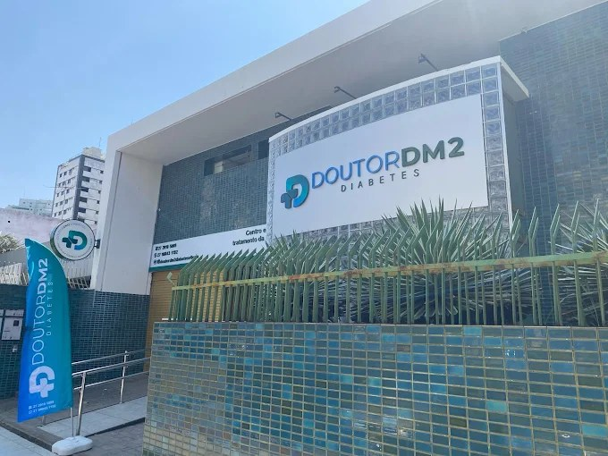
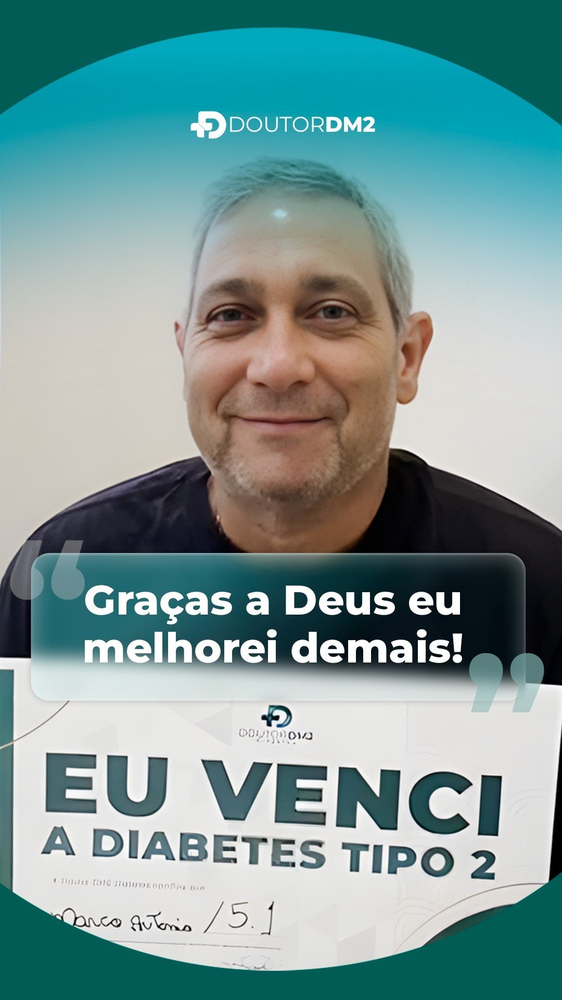
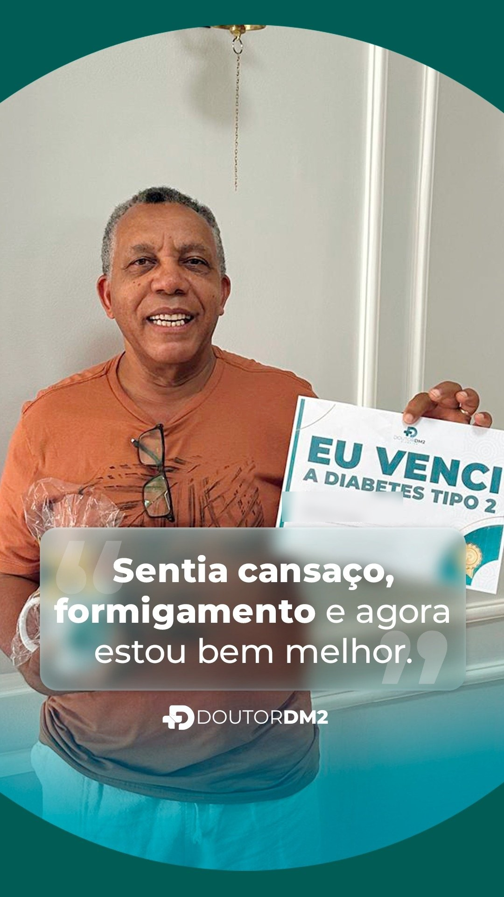
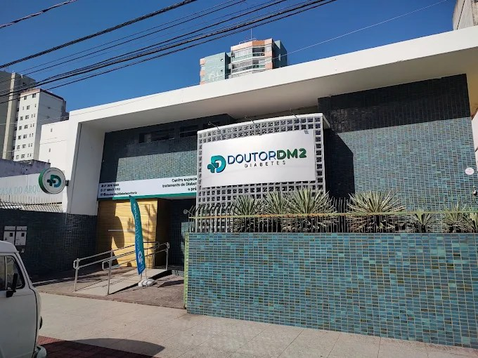

Edição especial · Diabetes tipo 2Vitória (ES)Ano 1 · N° 1
Diário da Saúde
Mais que controle, método inteligente
Diabetes tipo 2
Toma o remédio, corta o açúcar, faz o exame, e a glicose não baixa
O que quase ninguém explica é que o número alto é consequência, não a causa. E é por isso que a mesma rotina, ano após ano, entrega o mesmo resultado.
Da Redação · VitóriaVitóriaSaúde · Página 1

A unidade de Vitória fica na Rua Hélio Marconi, 42, no Bento Ferreira. Atende só diabetes tipo 2 e pré-diabetes.
O objetivo não é fazer sua glicose baixar no exame.
É diminuir a quantidade de remédio que você toma.
Se faz anos que você toma o comprimido certinho, corta o açúcar, faz o exame
de três em três meses e o número volta parecido, o problema provavelmente não é você.
É o alvo.
O que costuma acontecer com quem segue só controlando o número
A dose aumenta a cada ano, e o remédio vira rotina para o resto da vida
Aparecem o formigamento nos pés e nas mãos, o sono ruim, o cansaço que não passa
A conta chega de outro jeito: rim, visão, coração, circulação
E o exame seguinte volta igual, o que faz muita gente simplesmente desistir
Controlar a glicose é enxugar o chão. Aqui a gente fecha a torneira.
O acompanhamento persegue a causa que faz o número subir, e o placar não é o exame:
é quanto de medicação você ainda precisa tomar.
Quem já passou por isso na unidade de Vitória
Não somos nós dizendo. São avaliações públicas no Google, com nota 5,0.
Quem convive com diabetes tipo 2 conhece a rotina: o comprimido todo dia, a dieta que aperta, o exame de três em três meses. E o número que volta parecido. Depois de alguns anos assim, muita gente conclui que o problema é falta de esforço, quando o problema costuma ser outro.
A glicose alta é o sintoma que aparece no exame. Por trás dela está a resistência à insulina: o corpo até produz o hormônio, mas as células respondem cada vez menos. Tratar só o número é enxugar o chão com a torneira aberta, e é isso que faz a dose subir a cada ano.
O que quase ninguém pergunta é o que mudaria de verdade no seu dia. Não o número do exame: a quantidade de comprimido que você toma. É isso que o acompanhamento persegue nos primeiros 90 dias, e é isso que aparece escrito nas avaliações da unidade, abaixo.
3 em 3 mesesé o intervalo em que a maioria só descobre que nada mudou
Semana a semanaé o intervalo do acompanhamento na unidade de Vitória
Na Doutor DM2 de Vitória, no Bento Ferreira, a avaliação começa por um exame completo, não pela glicemia isolada. A partir dele a equipe monta um plano por pessoa (alimentação, suplementação e o que mais fizer sentido no caso) e o paciente volta toda semana para ajustar o que não funcionou. É esse retorno curto que aparece nas avaliações públicas da unidade.

“Graças a Deus eu melhorei demais.” Marco Antônio, paciente da rede Doutor DM2, com a glicada em 5,1

“Sentia cansaço, formigamento, e agora estou bem melhor.” Paciente da rede Doutor DM2

Unidade física, no Bento Ferreira
O que costuma mudar nos primeiros 90 dias
É o que o acompanhamento persegue. Cada caso é um caso, e a avaliação existe
justamente para dizer o que dá para esperar no seu.
01
Menos remédioA dose deixa de subir e passa a ser revista, sempre com exame na mão e
com a equipe acompanhando.
"Já estou diminuindo as doses do meu remédio." Deusmira, avaliação no Google
02
O corpo volta a responderSono, disposição, inchaço, o formigamento nos pés e nas mãos.
É o que as pessoas notam antes mesmo do exame seguinte.
"Há 1 mês já estou me sentindo 70% melhor. Meu sono melhorou, os inchaços acabaram, os pés
e as mãos pararam de formigar." Elias, avaliação no Google
03
Sair da rota das complicaçõesRim, visão, coração e circulação são o preço de anos
convivendo com a glicose alta. Mudar o alvo é o que tira você desse caminho.
04
Remissão, quando o seu quadro permiteÉ o objetivo do método, não uma promessa para
todo mundo. Quem tem perfil descobre isso na avaliação, com exame, antes de decidir
qualquer coisa.
Avaliações no Google · nota 5,0 com 13 avaliações
★★★★★
“Estou me sentindo muito melhor, bem mais disposta, e já estou diminuindo as doses do meu remédio! As meninas da clínica são maravilhosas, super simpáticas! Recomendo muito a clínica!”
Deusmira · avaliação no Google
★★★★★
“Desde que comecei, há 1 mês, já estou me sentindo 70% melhor, ou até mais. Meu sono melhorou, os inchaços acabaram, os pés e as mãos pararam de formigar, ansiedade está melhor. Aqui me sinto acolhido.”
Elias · avaliação no Google
★★★★★
“Me sinto muito bem quando chego na clínica, com mais disposição e mais animado. No início pensava que era golpe, e hoje sou a prova viva que não é!”
Joatan · avaliação no Google
O que passa pela cabeça de quase todo mundo antes de vir
"Isso não é golpe?"
É a frase que mais aparece, e um paciente escreveu exatamente isso na avaliação dele:
"no início pensava que era golpe, e hoje sou a prova viva que não é". Por isso nada
aqui começa com proposta. Começa com uma avaliação presencial, na clínica, onde a equipe
olha os seus exames e diz o que dá e o que não dá para fazer no seu caso.
"Eu já tentei de tudo."
Provavelmente tentou mesmo, e sempre mirando o número do exame. A diferença aqui é o
retorno toda semana: o plano é ajustado com o que funcionou e o que não funcionou nos seus
sete dias, não de três em três meses.
"E quanto custa?"
A avaliação custa R$ 150, e inclui o rastreamento metabólico, a análise de risco e
o plano por escrito. Se você não tiver perfil, a equipe diz na hora, e não existe proposta
nenhuma depois. Quem tem perfil recebe os valores do acompanhamento pessoalmente, com tudo
explicado antes de decidir qualquer coisa.
"Vou ter que parar meu remédio por conta própria?"
Não. Nada é retirado por conta própria e nada é feito sem acompanhamento. A redução, quando
acontece, é acompanhada de perto pela equipe, com exame na mão.
Para quem é. O acompanhamento é para quem tem diabetes tipo 2 ou pré-diabetes e quer sair do controle pelo número. Nem todo mundo tem perfil, e é justamente isso que a avaliação inicial define, antes de qualquer proposta.
Como começa. Você fala com a equipe no WhatsApp, conta seu caso em poucas linhas e recebe as datas disponíveis. A avaliação é presencial, na unidade de Vitória.
O que acontece na avaliação
A equipe ouve seu caso e olha os exames que você já tem, mesmo os antigos.
É feito o rastreamento metabólico, que mostra o que está por trás da glicose alta.
Você recebe a análise de risco e um plano por escrito, feito para o seu quadro.
Dura cerca de uma hora, é presencial, e você sai de lá sabendo se tem perfil para o método.
A avaliação custa R$ 150, com tudo isso incluso. Se você não tiver
perfil, a equipe diz na hora, e não existe proposta nenhuma depois.
Último passo
Responda 4 perguntas e a equipe já recebe o seu caso
Leva menos de 30 segundos. A sua preferência de dia e horário vai escrita na mensagem, então a equipe já responde com as datas.
0 de 4
Tenho diabetes tipo 2Tenho pré-diabetesÉ para um familiar
VitóriaSerraOutra cidade
Manhã (8h às 11h)Tarde (13h às 17h)Tanto faz
Esta unidade atende presencialmente apenas quem está em Vitória ou na Serra. A avaliação é feita na clínica, na Rua Hélio Marconi, 42, e por isso não conseguimos atender quem mora em outra cidade. A rede Doutor DM2 tem mais de 45 unidades pelo Brasil, incluindo uma em Vila Velha: procure a mais perto de você.
A equipe confirma a disponibilidade no WhatsApp. A avaliação é presencial,
na Rua Hélio Marconi, 42, Bento Ferreira.
Doutor DM2 Diabetes · Rua Hélio Marconi, 42, Bento Ferreira, Vitória (ES).
Conteúdo publicitário produzido pela unidade. Diário da Saúde é um nome fictício, usado apenas como formato editorial desta peça. Não é um veículo de imprensa.
Avaliações reproduzidas do perfil público da unidade no Google (nota 5,0 · 13 avaliações). Resultados variam de pessoa para pessoa e dependem de avaliação clínica individual.